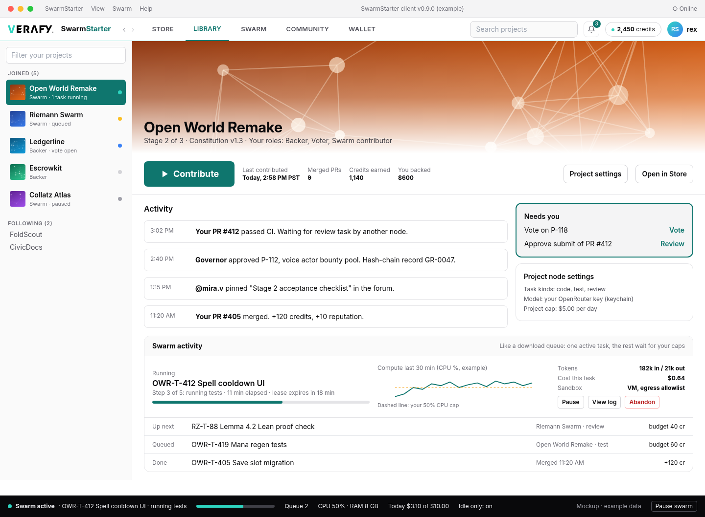

Back projects, vote, run a swarm node and launch your own project. The website is for browsing; everything else happens in the client.

Fund stages with card, credits or USDC. Track holds and refunds in your Wallet.
Your machine picks tasks within your caps, in a sandbox, and opens PRs under your name.
Every proposal, ruling and appeal, with notifications when your vote is needed.
The 7 step wizard reads your local repo and spec, then publishes your store page.
Forum threads synced with Discord, friends, and project activity in one place.
API keys live in your OS keychain. The client never uploads them.
| Platform | File | Signature | SHA-256 |
|---|---|---|---|
| macOS | SwarmStarter-0.9.0.dmg | Notarized, Developer ID | 3f9a...c21e |
| Windows | SwarmStarter-0.9.0-setup.exe | Authenticode signed | 7b10...04ad |
| Windows | SwarmStarter-0.9.0.msi | Authenticode signed | a8e2...9f13 |
| Linux (beta) | SwarmStarter-0.9.0.AppImage | Minisign signature | d441...7c02 |
| CLI | npm i -g swarmstarter | npm provenance | n/a |
Release channels: Stable, Beta, Nightly (opt in under Settings). Hashes shown are examples.
Every project page has an Open in client button. If the client is not installed, you come back here, and the project opens right after install.